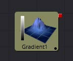

第四章 3D Texture Tools 三维纹理工具
- BumpMap [3Bu]
- Catcher [3Ca]
- CubeMap [3Cu]
- Falloff [3Fa]
- Fast Noise Texture [3FN]
- Gradient 3D [3Gd]
- Sphere Map [3SpM]
- Texture [Txr]
- Texture Transform [3Tx]
 |
||
 |
 |
|
 |
 |
|
 |
 |
|
BumpMap [3Bu]
Bumpmap工具可以将灰阶（高度贴图）图像转换成凹凸贴图，也可以直接使用Create Bumpmap工具创建的凹凸贴图。本工具输出一种材质。
外部输入
Bumpmap.ImageInput (white)
从图像中接收RGBA通道，用于凹凸计算或现有凹凸贴图。
Controls
此选项卡包含该工具的所有参数。

The Source Image is a...
在Heightmap和Bumpmap之间切换，前者将创建一个类似于CreateBumpmap工具的凹凸贴图，后者期望由CreateBumpmap工具创建一个凹凸贴图。
Filter Size
生成凹凸信息的过程基本上是一个自定义滤镜。这个多按钮控件设置过滤器的大小。
Extract height information from...
设置从何处提取灰阶信息的通道。
Clamp Normal.Z
在生成的凹凸纹理中剪切蓝色通道的较低值。
Filter Wrap Mode
基本上将图像“包裹”在边框处，因此在使用无缝可平铺纹理时，滤镜会产生正确的结果。
Height Scale
更改凹凸贴图中结果值的对比度。增加此值会产生更明显的凹凸贴图。
Bumpmap Texture Depth
可选地将产生的凹凸纹理转换为所需的位深。
关于Bumpmap的注释
Bumpmap在术语上有一些混乱，这取决于你正在阅读的论文/书籍/和你交谈的人。以下是Fusion的约定:
Heightmap
包含每个像素高度值的灰度图像
Bumpmap

包含存储在RGB通道中的法线的图像，用于修改现有法线（通常在切线空间中给出）
Normalmap
包含存储在RGB通道中的法线的图像，用于替换现有法线（通常在切线或对象空间中给出）
Catcher [3Ca]
Catcher材质是用来“捕捉”从Projector 3D和Camera 3D工具投射的纹理模式投影。截取的投影被转换成纹理贴图，并由Catcher材质应用于其连接的几何物体。
理解基于光的投影和基于纹理的投影之间的区别有助于了解Catcher工具的用途。基于光的投影简单地将投影图像中的RGB通道的值添加到位于投影锥内的任何几何的漫反射纹理。这使得在使用光模式投影时无法基于图像的alpha通道剪切几何体。
想象一下，您希望将建筑物的图像投影到图像平面上作为设置扩展镜头的一部分。您首先roto图像以matte窗口。这样就可以在最终合成中看到墙后面房间的几何物体。当此图像投影为光时，将忽略Alpha通道，因此被matte的窗口保持不透明。
通过将Catcher连接到应用于图像平面的材质的漫反射纹理贴图，然后将投影从Light or Ambient Light模式切换到Texture模式，Fusion知道将投影图像应用为纹理贴图。使用此技术时，窗口将变为透明，并且可以看到窗口后面的几何物体。
这种方法相对于光投影的主要优点是可以使用Catcher将alpha通道投影到对象上，并且不需要启用照明。另一个优点是Catcher不仅限于材质的漫反射输入，因此可以投射高光强度贴图，甚至是反射和折射贴图。
注意：Catcher材质需要场景中的 Projector 3D或Camera 3D工具，设置为在Catcher所连接的对象上以Texture模式投影图像。如果没有投影，或者投影未设置为Texture模式，Catcher将简单地使对象透明且不可见。
外部输入

此材质工具没有任何外部输入。
Controls
Enable
使用此复选框可启用或禁用该工具。
Color Accumulation Mode
Color Accumulation Mode用于控制Catcher如何组合来自多台投影机的灯光。当场景中只有一台投影机时，它对结果没有影响。此控件旨在与Software渲染器一起使用，并且在使用OpenGL渲染器时不会产生任何影响。
Alpha Accumulation Mode
Alpha Accumulation Mode用于控制Catcher如何组合来自多台投影机的Alpha通道。当场景中只有一台投影机时，它对结果没有影响。此控件旨在与Software渲染器一起使用，并且在使用OpenGL渲染器时不会产生任何影响。
Accumulation Threshold
Accumulation Threshold可用于从累积计算中排除某些低值。例如，当使用Median Accumulation累积模式时，阈值0.01将从中值计算中排除任何值小于0.01的像素。
Restrict by Projector ID
激活时，Catcher只会从具有匹配ID的Projector接收光线。具有不同ID的Projector将被忽略。
Material ID
此滑块设置分配给此材质的数字标识符。如果渲染器中启用了相应选项，这个值将被渲染到MatID辅助通道中。
CubeMap [3Cu]
CubeMap工具使用单独的图像为立方体的每个面创建纹理贴图。它还可以从包含垂直或水平十字布局中的展开立方体的单个图像中提取立方体的各个面。
通过以90度视角安装6个摄像机以指向上，下，左，右，前和后来产生立方体贴图。
该工具提供了为生成的纹理贴图设置参考坐标系和旋转的选项。CubeMap工具通常用于为远距离区域（如天空或视野）或反射和折射贴图生成环境贴图。
外部输入

CubeMap.CrossImage
[白色，必需的]此输入仅在工具设置为Vertical Cross或Horizontal Cross方向时可见。 它需要一个2D图像。
CubeMap.[DIRECTION]
[白色，必需的]仅当工具设置为Separate Images方向模式时，才会显示这六个输入。每个输入都需要对齐图像以匹配左，右，上，下，前和后面。
Controls
Orientation
这个多按钮控件告诉工具对立方体贴图纹理要求哪种输入。有效选项包括：
- Separate Images: 此选项在工具图块上显示六个输入，一个用于立方体的每个面。如果单独的图像不是正方形或不是相同大小，它们将被重新缩放为可包含所有图像的最大1:1图像。
- Vertical Cross: 此选项显示工具磁贴上的单个输入。图像应该是立方体的展开纹理，其中包含组织成垂直交叉形式的所有面，其中高度大于宽度。如果交叉图像的图像方面不是3:4，则Cubemap工具会将其裁剪下来，以匹配适当的宽高比。
- Horizontal Cross: 此选项显示工具磁贴上的单个输入。图像应该是立方体的展开纹理，其中包含组织成水平交叉形式的所有面，其中宽度大于高度。如果交叉图像的图像方面不是3:4，则Cubemap工具会将其裁剪下来，以匹配适当的宽高比。
Coordinate System
此多按钮控件设置将图像转换为纹理时使用的坐标系。
- Model: 此选项沿着对象局部坐标系定向纹理。
- World: 此选项使用全局或世界坐标系定向生成的纹理。
- Eye: 此选项将纹理贴图与相机或查看器的坐标系对齐。
Warn about bad dimensions
如果提供的图像尺寸不符合所选方向模式的要求，则选中此复选框将在控制台中显示警告消息。
Material ID
此滑块设置分配给此材质的数字标识符。如果渲染器中启用了相应选项，这个值将被渲染到MatID辅助通道中。
Falloff [3Fa]
Falloff工具根据材质所应用的物体与相机之间的入射角将两种材质混合在一起。 当您希望将一种材质用于将光直接反射回相机的几何物体部分而另一种不同的材质用于将光反射回场景的部件时，这非常有用。
外部输入

Falloff.FaceOnMaterial
[橙色，可选的]此输入需要2D图像或3D材质。如果提供了2D图像，则将使用基本材质着色器将其转换为漫反射纹理贴图。
Falloff.GlancingMaterial
[绿色，可选的]此输入需要2D图像或3D材质。如果提供了2D图像，则将使用基本材质着色器将其转换为漫反射纹理贴图。
虽然此工具的输入可以是图像，但输出始终是一种材质。
Controls

Color Variation
Two Tone
两个常规颜色控件定义了Glancing和Face On的颜色。
Gradient
渐变控件定义了Glancing和Face On的颜色。这可以用于多种效果，例如创建Toon着色器。
Face On Color
Face On Color
Face On Color定义了面向相机的表面部件的颜色。如果提供了Face On纹理贴图，则此处提供的颜色值将乘以纹理中的颜色值。
Face On Opacity
降低材质的不透明度将降低面部材质的颜色和Alpha值，使材质透明。
Glancing Color
Glancing Color
Glancing Color定义了更垂直于相机的表面部分的颜色。如果Glancing材质端口具有有效输入，则此输入将乘以此颜色。
Glancing Opacity
降低材质的不透明度将降低Glancing材质的颜色和alpha值，使材质透明。
Falloff
此值控制Glancing和Face On强度之间的过渡。它非常类似于应用于将一个值混合到另一个值的渐变的伽玛操作。
Material ID
此滑块设置分配给此材质的数字标识符。如果渲染器中启用了相应选项，这个值将被渲染到MatID辅助通道中。
Fast Noise Texture [3FN]
Fast Noise Texture工具是2DFast Noise工具的与程序分辨率无关的版本。它直接创建噪声纹理作为3D工具使用的材质。它提供了一个3D体积模式，可以与提供UVW纹理坐标的工具（如设置为XYZtoUVW或相机的UV Map工具）一起创建无缝纹理。
外部输入
FastNoiseTexture.SourceMaterial
[橙色，必需的]此输入将接受2D图像或3D材质。这由噪声模式调制。
Controls

Output Mode
- 2D: 根据2D纹理坐标（UV）计算噪声纹理。该模式允许平滑地改变噪声模式。
- 3D: 根据3D纹理坐标（UVW）计算噪声纹理。像Shape 3D这样的工具会自动提供第三个纹理坐标，否则可以使用UV Map工具创建3D纹理空间。不支持噪声模式的动画。
Discontinuous
或者，噪声函数在值之间进行插值以创建平滑连续的结果梯度。启用此复选框可沿某些噪声等值线创建硬间断线。结果将产生截然不同的效果。
Invert
选中此复选框以反转噪声，创建原始图案的负像。当启用Discontinuous时，这是最有效的。
Detail
增加此滑块的值可在噪声结果中生成更高级别的细节。较大的值会增加更多层次的增进详细的噪音，而不会影响整体模式。较高的值会使渲染需要更长时间，但可以产生更自然的结果（并非所有图形卡都支持更高的硬件细节级别）。
Brightness
此控件可调整噪声贴图的整体亮度。
Contrast
此控件增加或减少噪声图的整体对比度。它可以加大噪声的影响。
Scale
可以使用Scale滑块调整噪声贴图的特征比例，将其从整个图像的温和变化更改为更紧密的整体纹理效果。该值表示沿UV轴的刻度。
Scale Z
（仅限3D）Scale Z的值在纹理空间中沿W轴缩放噪声纹理。
Seethe
（仅限2D）Seethe控件可平滑地改变2D噪声模式。
Seethe Rate
（仅限2D）与上面的Seethe控件一样，Seethe Rate也会使噪声贴图发生变化。Seethe Rate定义噪声每帧改变的速率，自动引起噪声的动画漂移，而不需要样条动画。
Material ID
此滑块设置分配给此材质的数字标识符。如果渲染器中启用了相应选项，这个值将被渲染到MatID辅助通道中。
Gradient 3D [3Gd]
使用渐变3D工具，可以使用各种渐变类型对对象进行纹理化。它提供了Background工具的许多控件。
虽然无法直接在3D空间中变换渐变，但可以使用以下工具进行定向：
Texture Transform工具
Texture Transform工具可用于调整每个像素的映射。
UVMap工具
UV Map工具可用于调整每个顶点的映射（使用XYZtoUVW模式）。这有屏幕控制，因此您可以看到渐变正在做什么。建议使用此工具，因为评估速度更快。

Controls

Gradient Type
确定用于渐变的类型或模式。
- Linear: 简单的线性渐变。
- Reflect: 基于线性模式，此渐变将在纹理范围的中间进行镜像。
- Square: 使用方形模式应用渐变。
- Cross: 与Reflect模式类似，但它将使用两个轴来应用渐变。
- Radial: Radial模式使用圆形模式来应用渐变。

Gradient
Gradient控件由一个条形图组成，可以在其中添加，修改和删除渐变的点。每个点都有自己的颜色。可以设置颜色的动画以及点的位置。此外，可以将From Image修改器应用于渐变以从图像中评估它。
Gradient Interpolation Method
默认情况下，梯度在RGB颜色空间中从一点到另一点进行线性插值。这有时会导致不需要的颜色。选择另一个颜色空间可以提供更好的结果。
Offset
允许平移渐变。
Repeat
定义如何处理渐变的左右边框。
将渐变设置为Once，Repeat和Ping Pong从顶部到底部分别向左移动渐变。
- Once: 使用Gradient Offset控件移动渐变时，边框颜色将保持其值。将默认渐变向左移动将导致左侧出现白色边框，向右移动将导致右侧出现黑色边框。
- Repeat: 使用Gradient Offset控件移动渐变时，边框颜色将被包围。将默认渐变向左移动将导致从白色到黑色的急剧跳跃，向右移动将导致从黑色到白色的急剧跳跃。
- Ping Pong: 使用Gradient Offset控件移动渐变时，边框颜色来回“打乒乓”。将默认渐变向左移动将导致边缘从白色变回黑色，向右移动将导致边缘从黑色渐变回白色。
Sub Pixel
确定创建渐变的精度。
Material ID
此滑块设置分配给此材质的数字标识符。如果渲染器中启用了相应选项，这个值将被渲染到MatID辅助通道中。
Sphere Map [3SpM]
Sphere Map工具允许从图像创建球形纹理贴图。输入图像应表示经度/纬度格式的纹理信息，其中X轴表示经度0-360度，Y轴表示纬度-90到+90度。
外部输入
SphereMap.ImageImage
[白色，必需的]从图像输出接收RGBA通道。
Controls
Angular Mapping
调整纹理坐标映射，使极点较少被压扁，纹理中的区域映射到球体上的相等区域。换句话说，它将纬度线的映射从半球形鱼眼转变为角鱼眼。此映射尝试保留区域并使绘制或修改球体贴图更容易，因为图像不是在极点处压缩。
Rotation
提供旋转纹理贴图的控件。
Material ID
此滑块设置分配给此材质的数字标识符。如果渲染器中启用了相应选项，这个值将被渲染到MatID辅助通道中。
该工具需要宽高比为2:1的图像。否则，将根据以下规则钳制图像：
2 * width > height
宽度适合球体，杆将显示夹紧边缘。
2 * width < height
高度适合球体，并且将围绕0度经度线进行夹紧。
Sphere Map与直接将纹理连接到Sphere
您可以直接将经纬(球面投影)纹理映射连接到一个球体，而不是首先通过连线将其连接到Sphere Map工具。如果您将起始/结束角和纬度设置为小于360°/180°，则会导致不同的渲染。在第一种情况下，纹理将被压扁。当使用Sphere Map工具时，纹理将被裁剪。 比较：
注意：如果你直接将纹理导入球体，它也会被水平镜像。您可以首先使用Transform工具来“修复”这个问题。
Texture [Txr]
Texture工具可以控制渲染图像中元素的纹理映射。纹理贴图图像（连接到绿色输入）可以包裹在对象周围以替换当前纹理。Texture工具依赖于3D渲染图像中U和V贴图通道的存在。如果这些通道不存在，则此工具无效。
注意：背景像素的U和V值可能为0.0，这会将这些像素设置为纹理角点像素的颜色。要将纹理限制为特定对象，请使用基于物体的alpha或基于Object或Material ID通道效果遮罩。
有关更多信息，请参阅“辅助通道Auxiliary Channels”章节。
外部输入
CreateTexture.ImageInput
[橙色，必需的]此输入需要一个2D图像。
Controls
Wrap Mode
如果在纹理空间中转换纹理（使用下面的控件或UV Map工具），则可能会在图像边框之外的区域映射到对象上。Wrap Mode确定图像在这些区域中的应用方式。
- Wrap: 这会围绕图像的边框包裹图像的边缘。
- Clamp: 图像边缘的颜色用于纹理化。此模式类似于“变换”工具中的“复制”模式。
- Black: 图像沿其边缘被剪裁。使用alpha=0的黑色代替。
- Mirror: 图像在X和Y中都被镜像。
U/V Offset
这些滑块可用于沿U和V坐标偏移纹理。
U/V Scale
这些滑块可用于沿U和V坐标缩放纹理。
Texture Transform [3Tx]
Texture Transform工具可用于平移，旋转和缩放输入材质上的图像纹理。虽然输入也可以是图像，但始终输出材质。
外部输入
TextureTransform.MaterialInput
[橙色，可选的]此输入需要2D图像或3D材质。
Controls
注意：并非所有图形卡都支持所有Wrap模式。
Translation
U, V, W Translation
这些滑块将沿U，V和W轴移动纹理。
Rotation
Rotation Order
使用这些按钮设置应用旋转的顺序。
U, V, W Rotation
与旋转顺序一起，这些设置定义围绕UVW轴的旋转。
Scale
U, V, W Scale
沿相应的UVW轴缩放纹理。
Pivot
U, V, W Pivot
设置旋转和缩放的参考点。
Material ID
此滑块设置分配给此材质的数字标识符。如果渲染器中启用了相应选项，这个值将被渲染到MatID辅助通道中。